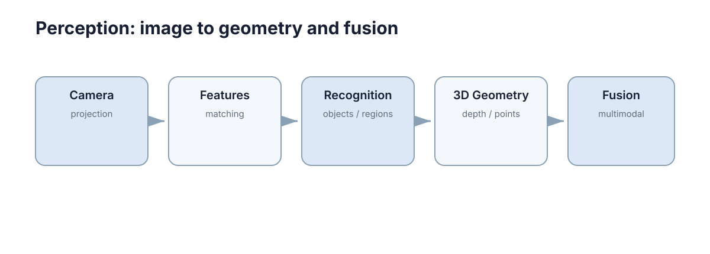

Perception
感知部分只保留机器人和自动驾驶最常用的视觉与三维感知基础：成像、特征、检测分割、深度点云和多模态融合。一句话概括：感知的任务不是“让模型认出东西”，而是把物理世界转换成一份带坐标系、带时间戳、带不确定度的结构化描述，交给下游的定位、规划和控制使用。 一份“准但不带坐标”的检测结果，对机器人来说和没有检测没有区别。
这一节的目标是建立一条完整链路：像素 → 特征 → 语义 → 几何 → 融合。链路每一环的输出都是下一环的输入，因此判断“这一环做得好不好”，标准不是指标好看，而是它交给下游的信息是否够用、是否诚实。

本节要解决的问题
读感知之前，最常见的困惑是“模型能跑，但不知道结果用在哪、错在哪”。具体表现为三类：
- 坐标系断层：能把目标框画在图像上，但说不出这个框对应世界系中哪个位置、置信度如何影响下游；
- 时序断层：单帧结果不错，一上实车就抖，不知道是检测不稳、时标不对，还是标定漂了；
- 归因断层：融合后“看起来更差”，无法判断是哪个模态、哪个环节引入的问题。
这一节按一条主线组织：成像与相机 → 特征与几何 → 检测与分割 → 深度与点云 → 多模态融合。 每一章都回答同一组问题：这层解决什么、输入输出是什么、关键公式的变量含义、失效模式是什么、和相邻层怎么接。
判断“真的学懂了”的标准是能否回答下面这类带数量级的问题：
- 相机焦距 800 px、像素误差 1 px，10 m 处的横向定位误差是多少？（约 1.25 cm）
- 时间戳差 30 ms、车速 1.5 m/s，图像和点云会错开多少？（4.5 cm）
- 外参旋转误差 0.5°，在 30 m 处的投影偏差是多少？（约 26 cm）
这些问题结构相同：先把误差换算成物理单位，再决定改哪一环。 例如“框和点云对不上”，若错位随距离线性增长，那是旋转外参问题；若错位与距离无关，那是平移外参问题；若错位忽大忽小，那是时间同步问题。现象形态直接指向根因层级，这是本节最想传授的判断力。
因此读这一节时建议随身带三个量：
- 误差量级：当前环节的误差换算到物理单位是多少米、多少度、多少毫秒；
- 任务余量：下游允许的误差上限（通道宽度、跟踪精度、障碍膨胀量）；
- 处理频率：这一环的输出频率能否满足下游的控制周期与延迟要求。
只要“余量 > 误差”，系统就能工作；一旦反过来，任何算法优化都救不回来。 举例：定位横向误差 0.25 m、单侧通道余量 0.30 m，理论上还能通过，但只需再叠加 0.10 m 的感知误差就立即越界。此时正确的动作是降速、换更保守的路径或提高定位精度，而不是继续调检测阈值——感知指标的微小提升，无法补偿余量的结构性不足。
五章的推进逻辑
| 顺序 | 章节 | 输入 | 输出 | 核心问题 |
|---|---|---|---|---|
| 1 | 图像与相机模型基础 | 光子 → 传感器读数 | 像素阵列 + 内参模型 | 三维点如何变成像素 |
| 2 | 特征视觉 | 像素阵列 | 关键点、描述子、匹配 | 如何找到可重复的对应 |
| 3 | 目标检测与图像分割 | 像素阵列 | 框、掩码、类别、置信度 | 像素如何变成语义 |
| 4 | 深度、三维视觉与点云 | 像素 + 深度 | 统一坐标系下的三维点 | 像素如何变回几何 |
| 5 | 多模态感知 | 多源、多频率数据 | 对齐后的融合结果 | 如何把互补信息合到一起 |
推进逻辑是依赖关系而非并列关系：第 1 章的内参是第 4 章反投影的前提；第 2 章的特征与匹配是视觉里程计、SLAM 和配准的共同基础；第 3 章的语义只有挂到第 4 章的几何上，才能变成“世界里的一个物体”；第 5 章融合的上限由前四章的对齐质量决定。
反过来说，上游的错误无法在下游被修复：内参错了，再准的检测也无法变成正确位置；标定漂了，再强的融合网络也只会把错位的两种数据一起用错。因此本节反复强调一个顺序：先保证几何与时间正确，再谈模型精度。
按输入输出看，这条链还有两个特点值得记住。第一，只有第 3 章产出语义，其余章节都在保证几何与时间正确——这解释了为什么感知系统的大部分故障都不是模型问题，而是坐标与时序问题。第二，第 5 章的输出不是“一个更准的框”，而是一份携带健康状态的世界描述：它必须同时说明“我看到什么”和“我有多可信”，否则下游无法据此选择保守策略。
概念地图
下图给出感知链路的概览结构，逐节点解释如下。图中的链是 Camera → projection → Features → matching → Recognition → 3D Geometry → Fusion，箭头表示信息流方向。
Camera / projection（相机与投影） 是整条链的起点。世界点 \(X\) 通过内参 \(K\) 和外参投影到像素：
这个式子只有一个方向是“便宜”的：三维到二维是投影，信息必然损失（深度被压掉）；二维到三维必须补充额外信息（深度、多视角或先验）。整节的其余章节，本质上都是在想办法把这丢失的深度补回来。
Features / matching（特征与匹配） 解决“两幅图里哪个点和哪个点是同一个”。它输出关键点位置与描述子，并用最近邻加比值检验完成匹配。它是双目、视觉里程计、图像拼接的共同基础，其质量直接决定几何估计质量。
Recognition / objects, regions（识别与区域） 把像素聚合成有语义的单元：检测框给出物体范围，分割掩码给出像素级归属。它输出的是“是什么”，但尚未说明“在哪里（世界系）”。
3D Geometry / depth, points（三维几何与点云） 把语义重新挂回空间：反投影、坐标变换、配准、特征。它把“图像中的一辆车”变成“世界系中一块占据某体积的点”。
Fusion / multimodal（多模态融合） 在时间与空间对齐之后，把几何、语义、运动信息合成为一份可信的世界描述。它同时承担失效检测与降级职责——这是它比“多加一个模态”更本质的部分。
读这张图时要注意三件事。第一，箭头方向的信息含量是递减的：越往右，信息被压缩得越厉害，可恢复性越差——所以“在左边做对”永远比“在右边补救”便宜。第二，左侧的错误会安静地传播到最右端：内参误差不会在检测层暴露，只会在融合后以“位置系统性偏移”的形式出现。第三，这条链不是单向的：下游的几何一致性检查可以反过来指出上游的标定问题，这也是“关闭单模态做消融”之所以有效的原因。
把图中每个节点与本章内容对应起来，读图的收益才落到实处：
| 图节点 | 代表概念 | 本章对应 | 该节点最典型的失效 |
|---|---|---|---|
| Camera / projection | 内参、外参、投影模型 | 第 1 章 | 尺度偏差、畸变未校正 |
| Features / matching | 关键点、描述子、匹配 | 第 2 章 | 重复纹理误匹配 |
| Recognition / regions | 检测框、分割掩码 | 第 3 章 | 漏检、误检、置信度不可信 |
| 3D Geometry / points | 反投影、点云、配准 | 第 4 章 | 深度误差、坐标系错链 |
| Fusion / multimodal | 时间空间对齐、降级 | 第 5 章 | 时差、标定漂移、模态失效 |
与其他章节的接口
感知不是自足的，它的概念大量流向下游章节。关键接口如下：
| 感知概念 | 用在哪一章 | 解决什么 |
|---|---|---|
| 相机模型与内参 \(K\) | 机器人传感与状态估计 | 把特征像素变成观测方程 \(z=h(x)\) |
| 特征与匹配 | 地图构建与 SLAM | 数据关联、回环检测、位姿图约束 |
| 反投影与点云 | 地图构建与 SLAM | 占据栅格、点云地图、scan matching |
| 深度误差模型 | 路径规划与运动规划 | 障碍膨胀量该给多大 |
| 时间对齐与时钟 | 分布式时间与时钟同步 | 多传感器、多节点的时标一致性 |
| 传感器数据流与 QoS | ROS 2 与 DDS 中间件 | 丢帧策略、队列深度、延迟控制 |
| 传感器失效与降级 | 容错与故障处理 | 模态失效时的安全行为 |
| 传感器与噪声建模 | 机器人传感器仿真 | 在仿真中注入噪声与失效 |
接口的读法是双向的：往上游看，感知要满足下游的精度和频率要求（规划器 10 Hz 就够了，控制器可能需要 100 Hz）；往下游看，感知的错误会以特定形式体现在下游症状里（定位漂移、规划抖动、控制超调）。
感知误差如何进入下游
感知误差不会消失，它只会换一种形式出现。把误差与下游症状对应起来，是调试时最快的定位方法。
| 误差类型 | 物理形态 | 影响定位 | 影响规划 | 影响控制 |
|---|---|---|---|---|
| 内参误差 | 尺度整体偏差 | 轨迹整体缩放、尺度漂移 | 障碍距离估计偏 | 速度标定错 |
| 外参平移误差 | 与距离无关的固定错位 | 点云与图像错位 | 障碍位置系统性偏移 | 转向目标偏 |
| 外参旋转误差 | 随距离线性增长的错位 | 远处结构扭曲 | 远处障碍判错 | 远距离跟踪漂 |
| 时间同步误差 | 与速度成正比的位置错 | 位姿跳变、回环失败 | 动态障碍预测错 | 追踪滞后或超前 |
| 深度误差 | 随距离增长的径向模糊 | 尺度漂移 | 可通行区域误判 | 减速/急停误触发 |
| 语义漏检 | 目标消失 | 无直接影响 | 漏掉障碍 | 无反应 |
| 语义误检 | 虚假目标 | 无直接影响 | 幽灵障碍、频繁重规划 | 无效避让 |
读表的要点是“误差形态 → 症状形态”是可逆的：如果你观察到“错位随距离线性增长”，那不必再猜，就是旋转外参；如果观察到“高速时错位明显、低速时正常”，那就是时间同步。这种反推能力比记住任何算法都实用。
还需要注意两类“看起来不是感知问题”的症状其实根源在感知：
- 回环检测失败：常被归为 SLAM 问题，但更常见的原因是特征描述子的体素参数与建图时不一致，导致匹配分数不稳定；
- 控制器高频小幅振荡：常被归为控制参数问题，但如果感知输出的时间戳抖动较大，控制器会一直追一个“已经过期的目标”，表现为无法收紧的振荡。
感知的误差一旦进入下游，就换上了下游的“语言”。 因此排查时应当先问“这个症状随什么变量变化”，而不是从最显眼的模块开始改。
调试顺序
当感知系统表现异常时，调试顺序应当是从物理到算法、从单模态到多模态，因为物理层错误会让算法层的一切评估失去意义。推荐流程有四步：
| 步骤 | 检查对象 | 方法 | 若失败的典型表现 |
|---|---|---|---|
| 1. 单模态 | 每个传感器单独工作 | 独立可视化、离线指标 | 单模态本身就不稳 |
| 2. 标定 | 内外参与时间偏移 | 标定板、远处边缘对齐 | 错位随距离变化 |
| 3. 对齐 | 时间戳与 TF 树 | 打印时差、检查 TF 链 | 错位随速度变化 |
| 4. 融合 | 融合增益与降级 | 消融实验 + 失效注入 | 融合反而更差 |
这个顺序不能颠倒。 常见错误是直接跳到第 4 步调网络或改融合权重，结果在一个“标定已经漂了”的系统上反复优化，永远得不到稳定结果。判断依据很简单：若关闭融合后单模态仍然不准，问题根本不在融合。
第 1 步的验收标准要写得具体：单模态在目标距离区间内的误差是否小于任务余量；单模态的失效条件是否可被检测（能否给出“我现在不可信”的信号）。一个不能自我报告不可信的模态，不适合参与融合。
第 2、3 步的核心工具是注入已知偏差并观察响应：人为把外参平移 5 cm、或把时间戳统一偏移 20 ms，看下游症状是否按理论量级变化。若症状没有变化，说明该参数根本没有进入计算链（例如被某个模块硬编码覆盖了）；若变化远大于理论值，说明链路上还有别的错误在叠加。这个“注入—观察—对量级”的循环，比反复读代码更快找到断点。
第 4 步的验收必须包含“退化可预期”：好的融合系统在模态失效时的性能下降应当是可控且可预测的（例如降速后仍能完成避障），而不是随机崩塌。若失效后的行为无法预测，说明系统实际上仍然强依赖于那个模态，融合只是表面上的冗余。
本章导航
- 图像与相机模型基础：成像过程、内参与畸变模型、坐标系约定，是后续所有几何计算的起点。
- 特征视觉：关键点、描述子、匹配与鲁棒估计，连接图像与几何。
- 目标检测与图像分割：从像素到语义单元，以及置信度该如何被下游使用。
- 深度、三维视觉与点云：深度来源、反投影坐标链、预处理、ICP 配准与点云特征。
- 多模态感知：时间与空间对齐的量化要求、外参维护流程、融合层级对比与失效降级。
五章之间存在明确的阅读依赖：第 4 章的反投影公式直接用第 1 章的内参；第 5 章的配准与融合依赖第 2 章的匹配概念；第 3 章的置信度只有结合第 5 章的失效处理才有正确语义。若时间有限，至少读完第 1 章与第 4 章——它们覆盖了感知系统中出错概率最高、也最难事后补救的几何部分。
每章的组织方式是一致的：核心认知句 → 图示 → 分小节展开 → 失效模式 → 下一步链接。因此读完之后应当能回答三件事：这一层把什么变成了什么、它在什么条件下失效、它的输出被谁使用。如果只能复述公式而答不出这三问，说明还没有真正接到系统上。
因此建议的读法是：先粗读五章，建立“误差换算成物理量”的直觉；再带着自己项目的具体症状回到对应章节，用“现象形态 → 根因层级”的对应关系定位问题；最后把结论落到三个量上——误差量级、任务余量、处理频率。
最后提醒一个常见误区：把感知当成分数竞赛。真实系统的瓶颈很少是 mAP 差两个点，而更常见是“时标晚 30 ms”“外参差 0.3°”“模态失效后没有任何降级”。优先把几何、时间、失效处理做对，模型精度才是有意义的增量。
下一步：建议按顺序从 图像与相机模型基础 读起；若已熟悉相机模型，可直接进入 目标检测与图像分割 或 深度、三维视觉与点云。想先了解感知在整机中的位置，读 机器人传感与状态估计；想了解感知数据如何在节点间传输，读 ROS 2 与 DDS 中间件。